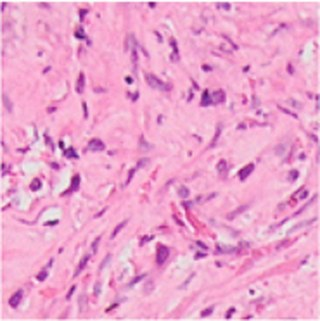
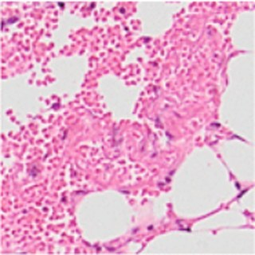

<!DOCTYPE html>
<html lang="en"><head><meta charset="utf-8">
<meta name="viewport" content="width=device-width,initial-scale=1">
<title>Cancer Cell Exploration</title>
<link href="https://fonts.googleapis.com/css2?family=Open+Sans:wght@400;600;700;800&display=swap" rel="stylesheet">
</head><body>
<script src="/assets/bvl.js"></script>
<script src="/assets/pdf.js"></script>
<script src="/u3/cce/ws.js"></script>
<script src="/u3/cce/pg.js"></script>
<script>
const $=PG.$;
const main=PG.init({releaseId:"u3/cce/p4",part:"Part 4",title:"Histopathology",backUrl:"p3b.html",nextUrl:"p5.html",nextLabel:"Next: Part 5 →"});
const SEED=PG.seed("cce-p4");
main.innerHTML=`
<div class="box"><h2>Let's build it: diagnosing tissue</h2>
<p>As you get older, it's important to see a general practitioner on a yearly basis to discuss your overall health and risk factors for diseases, including cancer. Some cancers don't have any noticeable symptoms and may be caught during these visits. In other cases, specific symptoms may prompt someone to visit their doctor for a consultation and collection of biological samples, such as blood and tissue, which can be tested and examined for diagnosis. Occasionally, samples collected during this process lead to the discovery of incredibly unique cancer cells that play critical roles in research.</p>
<p><b>Histology</b> is the study of the microscopic structure of tissues. <b>Pathology</b> is the study of disease. Therefore, <b>histopathology</b> is the diagnosis and study of diseases of the tissues, and involves examining tissues and/or cells under a microscope. Histopathologists are responsible for making tissue diagnoses and helping clinicians manage a patient's care.</p></div>

<div class="box" id="s4a"><h2>Part 4A: Can you correctly diagnose the healthy vs. cancer samples?</h2>
<p>Now you are the histopathologist! Below are eight tissue samples stained with a pink and purple dye (H&amp;E), so the nuclei look purple. <b>Four are normal and four are cancer.</b> Samples <b>A</b> and <b>B</b> are already identified as normal. Use them as a reference. Then label samples <b>C through H</b> as <b>Normal</b> or <b>Cancer</b>, and check. You will be told how many are correct, but not which ones, and you can try again. Tap a picture to enlarge it.</p>
<div class="refs"><figure><div class="gfx"></div><figcaption>Sample A: normal</figcaption></figure><figure><div class="gfx"></div><figcaption>Sample B: normal</figcaption></figure></div>
<div id="c4a"></div></div>

<div class="box" id="s4b" hidden><h2>Part 4B: Benign or malignant? Real tissue slides</h2>
<p>In Part 2 you sorted diagrams. Now sort <b>real breast tissue slides</b> (also stained purple and pink). Each round has <b>6 samples: 3 benign and 3 malignant</b>. Tap <b>Benign</b> or <b>Malignant</b> under each sample, then check. You will be told how many are correct, but not which ones. Tap a picture to enlarge it.</p>
<h3>Round 1</h3><div id="c4b1"></div>
<div id="r2" hidden><h3>Round 2</h3><div id="c4b2"></div></div>
<p class="note">Sources for the slides in 4B: Levenson RM, Krupinski EA, Navarro VM, Wasserman EA (2015). Pigeons (<i>Columba livia</i>) as Trainable Observers of Pathology and Radiology Breast Cancer Images. <i>PLoS ONE</i> 10(11): e0141357. <a href="https://doi.org/10.1371/journal.pone.0141357" target="_blank" rel="noopener">doi:10.1371/journal.pone.0141357</a>. Licensed <a href="https://creativecommons.org/licenses/by/4.0/" target="_blank" rel="noopener">CC BY 4.0</a>. Sample images were cropped from Figures 2 and 3.</p></div>`;

/* ---------- 4B: real benign / malignant slides (same six-tile rounds as before) ---------- */
const RN=[[["a1",0],["a2",0],["a3",0],["a4",1],["a5",1],["a6",1]],[["b1",0],["b2",0],["b3",0],["b4",1],["b5",1],["b6",1]]];
const BM_HINT="Look again at the highlighted sample. How organized are the cells and how evenly spaced? How large and dark are the nuclei compared with the others?";
function round(r){PG.classify($("c4b"+r),{key:"4b"+r,labels:["Benign","Malignant"],counts:[3,3],seed:SEED*7+r*31,noun:"sample",
 items:RN[r-1].map(t=>({html:'',truth:t[1]})),hint:()=>BM_HINT,
 onSolved:cw=>{WS.box(cw,"p4b"+r,WS.PROMPT["p4b"+r]);if(r==1){$("r2").hidden=false;if(!$("c4b2").children.length)round(2)}else PG.unlock()}})}


function show4b(){$("s4b").hidden=false;if(!$("c4b1").children.length)round(1)}
/* ---------- 4A: truth: 0 = normal, 1 = cancer ---------- */
const H4=[["c",1],["d",0],["e",1],["f",0],["g",1],["h",1]];
const NORMAL_HINT="Look again at Sample X. Compare it with normal samples A and B. Are the cells similar to each other and evenly spaced, with small nuclei?";
const CANCER_HINT="Look again at Sample X. Compare it with normal samples A and B. Are the cells crowded and different in size and shape, with large, dark nuclei?";
PG.classify($("c4a"),{key:"4a",labels:["Normal","Cancer"],counts:[2,4],seed:SEED*3+1,noun:"sample",
 items:H4.map(t=>({html:'',cap:"Sample "+t[0].toUpperCase(),truth:t[1]})),
 hint:(k,T)=>(T[k].truth?CANCER_HINT:NORMAL_HINT).replace("Sample X",T[k].cap),
 onSolved:cw=>{WS.box(cw,"p4a1",WS.PROMPT.p4a1);WS.box(cw,"p4a2",WS.PROMPT.p4a2);show4b()}});

PG.onTeacher=()=>{show4b();$("r2").hidden=false;if(!$("c4b2").children.length)round(2)};
if(PG.TEACH)PG.onTeacher();
</script></body></html>
